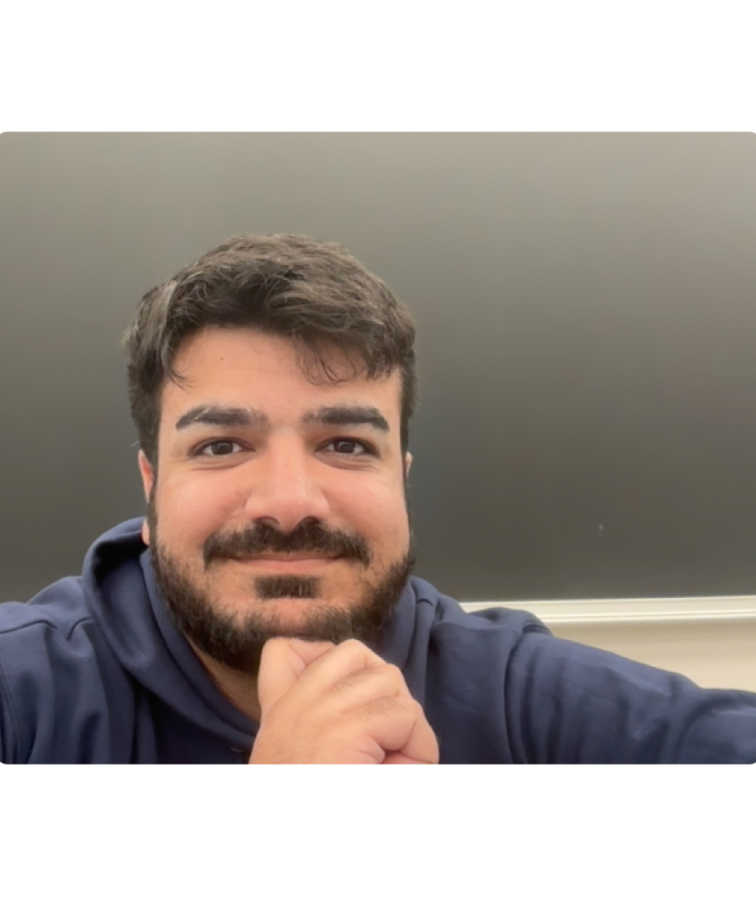

Course Instructor
March 2024 – June 2024
Instructor for DSC 212 - Probability and Statistics for Data Science, a graduate-level course in the Data Science department at UC San Diego.

Postdoctoral Scholar, Computer Science & Engineering
University of California, San Diego
Email: htaheri[at]ucsd[dot]edu
Google Scholar
I am a Postdoctoral Scholar in the Department of Computer Science and Engineering at UC San Diego, working with Arya Mazumdar. Previously, I obtained my Ph.D. in Electrical and Computer Engineering from UC Santa Barbara, where I was advised by Christos Thrampoulidis. I completed my B.Sc. in Electrical Engineering and Mathematics (double major) at Sharif University of Technology.
Instructor for DSC 212 - Probability and Statistics for Data Science, a graduate-level course in the Data Science department at UC San Diego.
I've had the opportunity to work with the following outstanding Ph.D. students at UCSD:
Held office hours and TA sessions for ECE-130A, ECE-130B, and ECE-178 at UC Santa Barbara.
Tutorial instructor and grader for Abstract Algebra I, Sharif University of Technology.
Homework designer and grader for Machine Learning course, Sharif University of Technology.